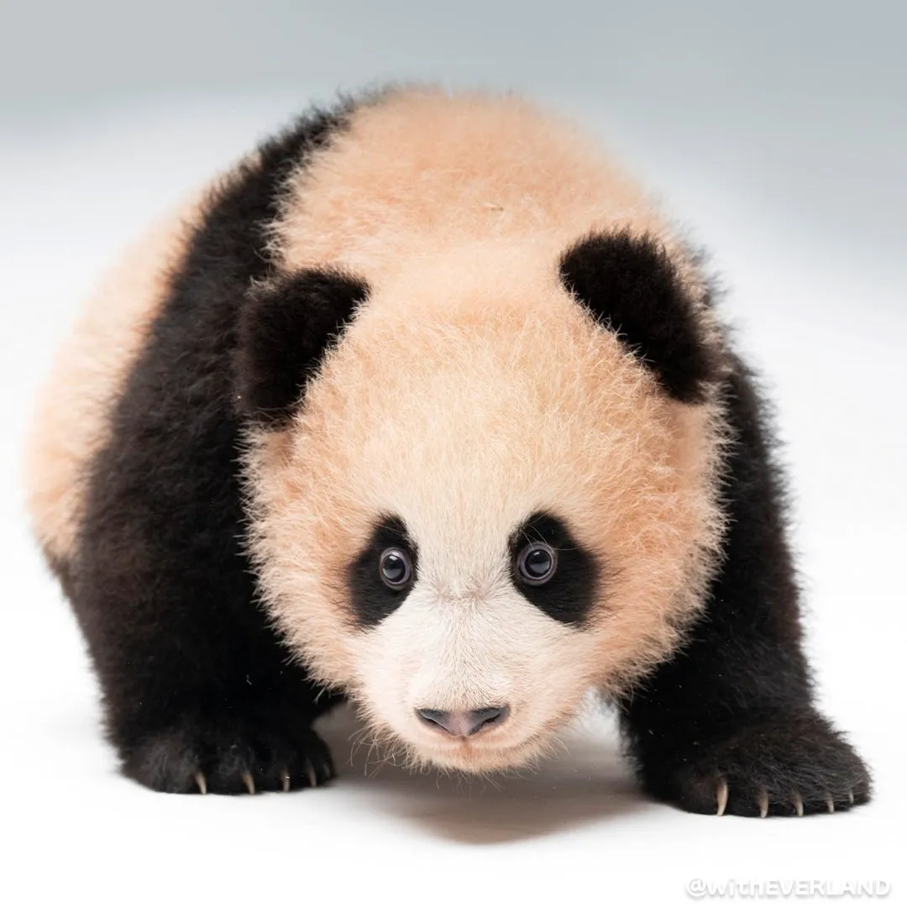
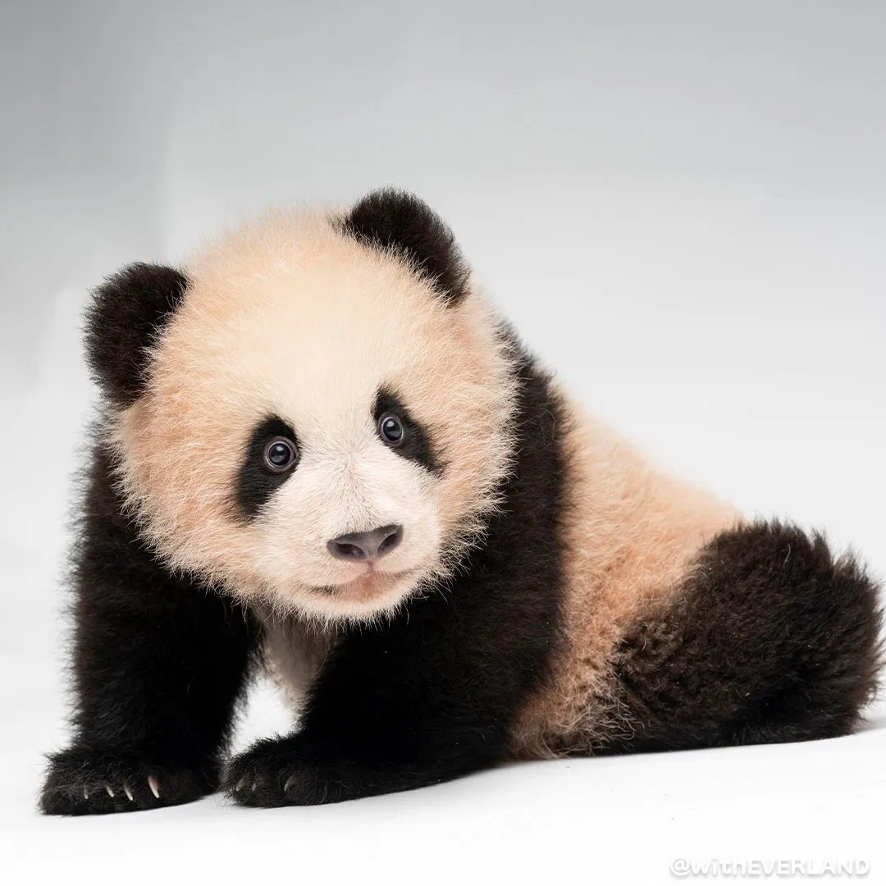

푸바오(중국어: 福宝, 2020년 7월 20일~)는 대한민국에서 최초로 자연 번식에 의해 용인 에버랜드에서 태어난 대왕판다(자이언트 판다)이다.푸바오의 이름은 행복을 주는 보물이라는 뜻으로, 팬들의 투표로 정해졌으며 이는 생후 100일 째에 이름을 붙였다.2023년 7월 7일 아이바오의 출산으로 쌍둥이 여동생들을 맞이하게 되었다. 또한 쌍둥이 여동생들의 이름은 에버랜드에서 공모된 이름을 추천한 결과, 루이바오와 후이바오로 각각 지어졌다.
후이바오&루이바오


2014년 시진핑 중화인민공화국 주석의 방한 이후 에버랜드로 들여온 러바오(아빠)와 아이바오(엄마)의 두번째 새끼로, 푸바오의 첫째 동생이다. 2023년 7월 7일 오전 4시 39분에 에버랜드 판다월드에서 대한민국 두번째로 자연 번식으로 태어난 판다이다. 워싱턴 조약에 따라 중국은 이미 선물한 판다를 제외한 세계의 모든 판다를 자국 소유로 하고 해외에 대여하는 방식으로 수출하기 때문에, 루이바오와 쌍둥이 여동생인 후이바오 또한 한국 출생이지만 소유권이 중국 정부에 있으며 성체가 되는 2027년 상반기쯤 중국으로 돌아갈 예정이다.2014년 시진핑 중화인민공화국 주석의 방한 이후 에버랜드로 들여온 러바오(아빠)와 아이바오(엄마)의 세 번째 새끼로, 푸바오의 둘째 동생이다. 2023년 7월 7일 오전 6시 39분에 에버랜드 판다월드에서 대한민국 세 번째로 자연 번식으로 태어난 판다이며 바오 가족의 막내이다. 워싱턴 조약에 따라 중국은 세계의 모든 판다를 자국 소유로 하고 해외에 대여하는 방식으로 수출하기 때문에, 후이바오와 쌍둥이 언니인 루이바오 또한 한국 출생이지만 소유권이 중국 정부에 있으며 성체가 되는 2027년 상반기쯤 중국으로 돌아갈 예정이다.
아이바오&러바오
에버랜드 판다월드에 사는 자이언트 판다. 에버랜드 최초로 자연분만으로 태어난 푸바오와 최초로 쌍둥이로 태어난 루이바오와 후이바오의 아버지이자 바오 가족의 가장이다. 또한 2024년 현재까지 한국에 온 모든 판다들 중 유일한 수컷 판다이다. 이름 러바오는 '기쁨을 주는 보물'이라는 뜻으로, 2012년 7월 28일 중국 쓰촨성 야안시에서 태어났다. 장난기 있고 사랑스러운 모습은 딸 푸바오가 많이 닮았다. 판다의 특성상 러바오는 푸바오와 함께 살지 않고 건너편 방사장에서 홀로 유유자적하며 산다2013년 7월 13일에 중국에서 수컷 판다 루루와 암컷 판다 신니얼 사이에서 태어난 자이언트판다이다. 국내에서 출생한 최초의 판다 푸바오와 쌍둥이 판다 루이바오 후이바오의 어머니이다. 아빠 러바오와는 달리 푸바오와 쌍둥이 판다의 육아를 직접 담당한다. 별명은 ’이뻐이뻐‘와 '아여사'가 대표적이다. 아이바오는 사랑스러운 보물이라는 뜻으로 애칭은 '사랑이'다. 러바오보다 국내에는 훨씬 더 먼저 알려졌는데 판다극장에서 소꿉친구 화양(华阳)과 함께 아기 판다 시절이 공개된 적이 있다.